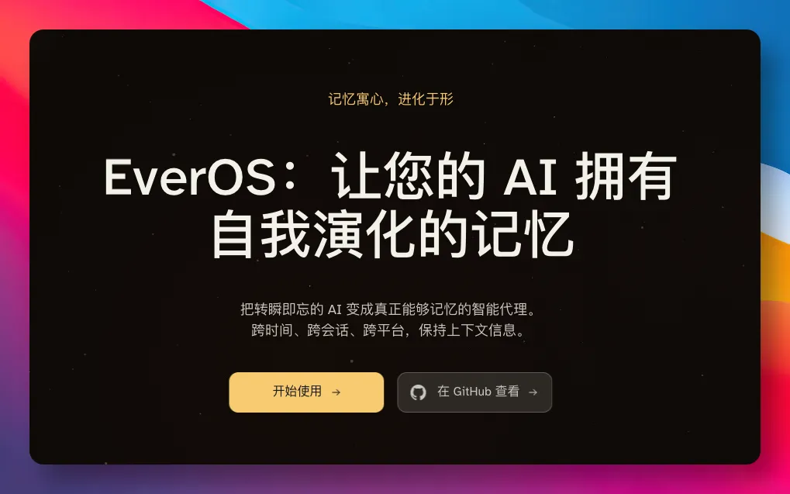
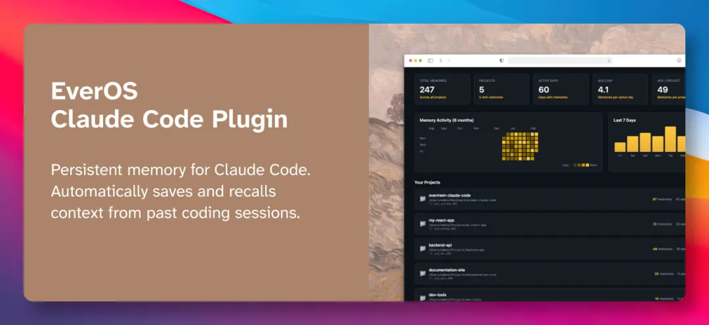
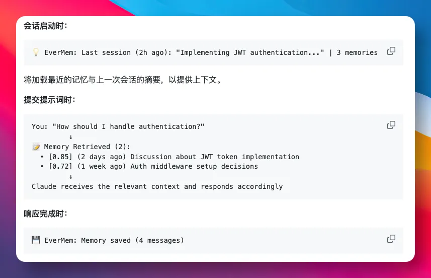
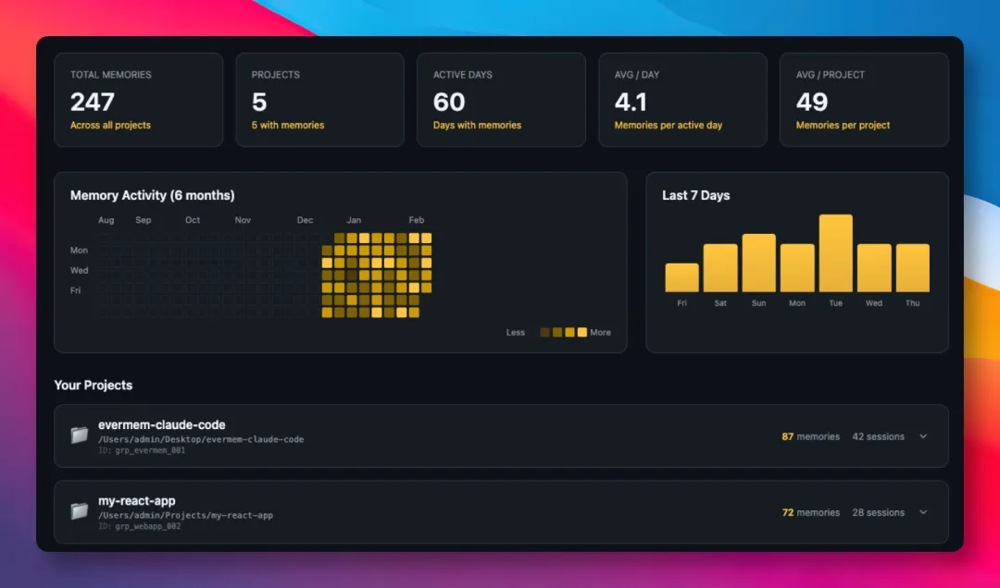
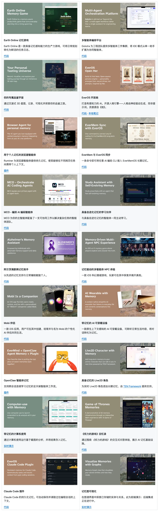

现在越来越觉得，Claude Code 或 Codex 最大的问题，已经不是写不出代码。
而是它记不住项目是怎么走到今天的。
上周刚跟它折腾两小时解决的一个 Bug，今天新开对话，它便完全不记得之前走到哪一步。
还有前天定下来的接口设计，AI 又找不到，直接给我们返回一套全新的方案。
为了让它有点记性，我们会习惯写一份 CLAUDE.md，把项目相关规则塞进去。
但这份文件得自己手动维护，对话里聊的关键决策、踩过的坑，AI 统统不会自动记下来。
直到最近，在 GitHub 上看到 EverOS 这个开源项目，它给 AI 装上了能自我进化的记忆。
GitHub：https://github.com/EverMind-AI/EverOS

项目由 EverMind（盛大旗下）团队开源。当打开项目看到的第一眼，有点被惊讶到了。
有超过 20 个真实落地的应用案例，覆盖各种不同的场景，而且全部均已开源可用。
其中就有一个 EverOS Claude Code 插件，正好解决了开头提及到的痛点。

装上插件之后，与 Claude Code 的每次对话内容它会自动保存下来。
当打开新对话，它会自动检索最近的内容，让 Claude 一上来就知道我们最近在哪个项目、做到了哪一步。
然后在提问的时候，它还会先去搜相关历史记忆，把检索到的内容塞进 Claude 的上下文。
比如问一句「我该怎么处理身份认证」，它会自动找回 2 天前讨论过的 JWT 实现方案。

想翻看历史决策的时候，还能在记忆库里直接搜索，定位到某次讨论。
不止这些。它还自带一个仿 GitHub 风格的记忆面板。
面板里有 6 个月的活动热力图、按项目分组的记忆时间线、最近 7 天的增长曲线。
最近在做哪个项目、聊了多少轮对话、讨论过什么决策，打开面板一目了然。

这个插件安装也非常简单，一行命令就搞定：
curl-fsSL https://raw.githubusercontent.com/EverMind-AI/evermem-claude-code/main/install.sh | bash脚本会引导填写 API 密钥、保存到配置、接着自动进行插件安装，全程基本不需要动手。
然而 Claude Code 插件，只是 EverOS 在开发者场景里的一个落地案例。
在仓库里还放着其他领域、完全不同应用场景的产品。
比如给中学生用的学习陪伴助手、给阿尔茨海默症患者用的记忆辅助应用、 AI 可穿戴设备等。

可以上下滚动的图片